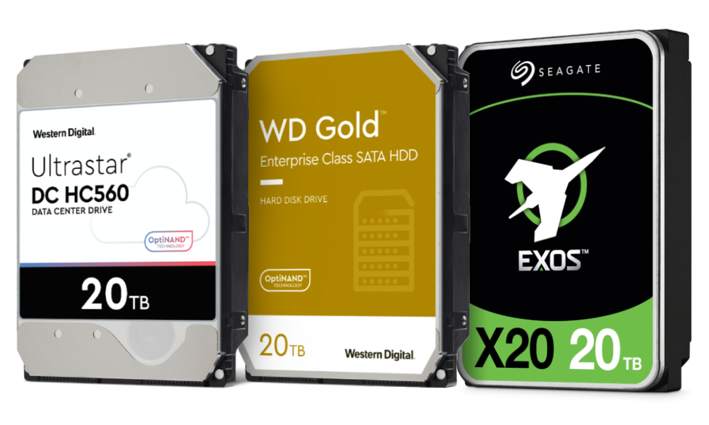

HDD diskovi su i dalje korisni za arhivu i sigurnosne kopije

HDD diskovi više nisu najbolji izbor za sustav, ali su korisni za spremanje velikih datoteka.
Njihova prednost je cijena po gigabajtu, pa se Äesto koriste za arhivu slika, videa i sigurnosne kopije.
Za najbolje iskustvo dobro je kombinirati SSD za sustav i HDD za veće datoteke koje se ne koriste stalno.